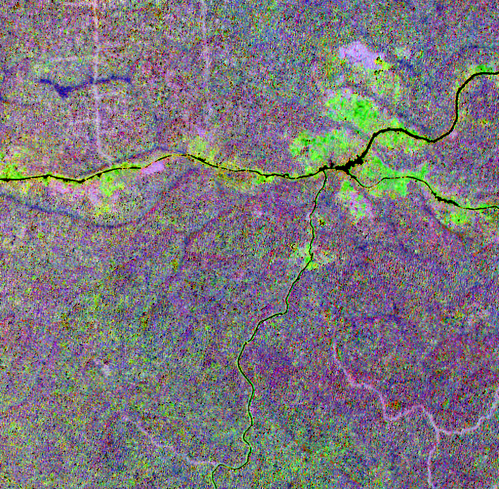
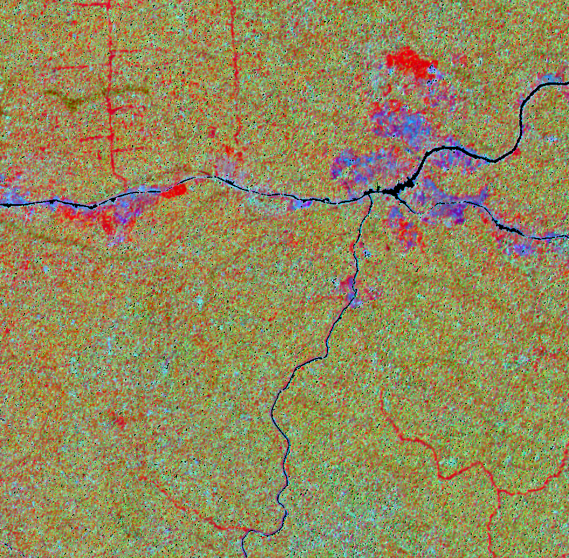

vignettes/biodivMapR_02.Rmd
biodivMapR_02.RmdA pre-processing step is usually required in order to produce relevant features from remote sensing data. When using multispectral/hyperspectral optical imagery, several alternatives can be considered to produce these features.
Spectral transformation. This includes PCA, MNF, as well as various multidimensional methods applying linear or non-linear transformations using the full spectral information
Spectral indices. They consist in applying simple transformations (difference, ratio, normalized difference…) on a limited number of spectral bands available from sensor acquisition. These include NDVI, EVI, NDWI1…
Biophysical properties. They involve physical information obtained from radiative transfer models, combined with an inversion algorithm dedicated to regression in order to link reflectance measured over part or all of the spectral range covered by a sensor, to one or multiple vegetation characteristics, such as LAI, leaf pigment and water content, LMA.
This tutorial describes a selection of options available for users
interested in producing features from an optical sensor (here,
Sentinel-2) to prepare for biodivMapR.
The image is assumed to be downloaded from the procedure described previously
The binary mask corresponding to the image to be processed is optional. However we strongly recommend using a mask when possible in order to discard pixels which may not be relevant for ecological analysis. This is the case for shaded, cloudy and non-vegetated pixels when focusing on vegetation biodiversity. Artificial surfaces and mineral surfaces should also be masked as they usually strongly contribute to spectral variability and do not inform about biological diversity.
# variables Refl_L2A and vegetation_mask defined in previous tutorial
input_raster_path <- Refl_L2A
input_mask_path <- vegetation_maskStandardized Principal Component Analysis (SPCA) can be applied on Sentinel-2 images with the code below.
First, the mask produced with preprocS2 during the
previous step is refined using a combination of radiometric filters.
NDVI filtering: allows filtering to eliminate
non-vegetated pixels. Nothing fancy so you may need to deal with mixed
pixels… NDVI_Thresh defines the minimum NDVI value to be
kept. By default, the NDVI is computed based on the NIR spectral band
closest to 835 nm, and the RED spectral band closest to 670 nm.
NIR filtering: allows filtering of shadows and
pixels with very low signal. NIR_Thresh defines the minimum
NIR value to be kept. By default, the NIR spectral band closest to 835
nm is used.
BLUE filtering: allows filtering of clouds,
based on the hypothesis that atmospheric scattering will lead to higher
reflectance in the blue domain. Blue_Thresh defines the
maximum Blue reflectance to be kept. By default, the Blue spectral band
closest to 480 nm is used.
Normalization of reflectance data with Continuum Removal can be
performed as additional pre-processing step. This is done by setting
Continuum_Removal = T as input when running
perform_PCA.
Continuum Removal is available when working with
reflectance data only. It requires information on the sensor spectral
bands, defined by input_rast_wl This procedure eliminates
multiplicative effects on reflectance. It proved to be relatively
efficient in decreasing the effect of changes in illumination within
individual tree crowns, when using high spatial resolution imaging
spectroscopy over tropical forests.
Continuum Removal is recommended when processing high spatial resolution (spatial resolution 10 m) multi and hyperspectral data.
library(biodivMapR)
output_dir <- './biodivMapR'
# 1- define spectral bands corresponding to the sensor.
# central wavelength of S2 spectral bands can be loaded from biodivMapR data
HDRpath <- system.file('extdata', 'HDR', 'SENTINEL_2.hdr', package = 'biodivMapR')
SensorBands <- read_ENVI_header(HDRpath = HDRpath)$wavelength
# 2- define spectral transformation: select between 'PCA' and 'SPCA'
spectral_transformation <- 'SPCA'
# 3- define path for output directory
output_dir_PCA <- file.path(output_dir, spectral_transformation)
# 4- apply additional (very basic) radiometric filtering
# --> User's responsibility to check if resulting mask meets needs
NDVI_Thresh <- 0.65 # NDVI thresholding to exclude non vegetated pixels
Blue_Thresh <- 500 # Blue thresholding to exclude remaining cloudy/hazy pixels
NIR_Thresh <- 1500 # NDVI thresholding to exclude remaining shaded pixels
mask_path_PCA <- radiometric_filtering(input_raster_path = input_raster_path,
input_rast_wl = SensorBands,
input_mask_path = input_mask_path,
output_dir = output_dir_PCA,
NDVI_Thresh = NDVI_Thresh,
Blue_Thresh = Blue_Thresh,
NIR_Thresh = NIR_Thresh)
# 5- apply spectral transformation on continuum removed reflectance
PCA_Output <- perform_PCA(input_raster_path = input_raster_path,
input_rast_wl = SensorBands,
output_dir = output_dir_PCA,
Continuum_Removal = Continuum_Removal,
input_mask_path = mask_path_PCA,
maxRows = 1000)The original publication Féret & Asner (2014)
used SPCA when applying the method implemented in
biodivMapR. This procedure remains a valid option.
Once spectral transformation is performed, users are requested to
select relevant components. biodivMapR currently does not
provide automated procedure for principal component (PC) selection.
Hence, PC selection is users’ responsibility. We recommend selection
based on visual inspection in order to identify spatial features
highlighting changes in vegetation types / species composition. This
procedure requires expertise on the ecosystem of interest. PC selection
should ideally be validated with ground information.
Data-driven methods adjusted based on data distribution for a specific image/site, such as PCA, usually show poor generalization ability, and cannot be applied on other images. As explained earlier, PC selection is a subjective step which prevents from fully automated workflows. Moreover, spectral transformation such as PCA and MNF are usually computationally demanding.
Here, we selected components 1, 5, and 6 to produce the diversity maps. A color composition of these components is displayed below.

Note that the selection of spectral indices used here may not be
optimal. Users may want to test various combinations of spectral
indices. The function biodivMapR_SFS included in the
package allows sequential feature selection to identify the set of
features optimizing a criterion (diversity metrics, discrimination among
vegetation types).
Users can contact the authors of the package for assistance if needed
when running biodivMapR_SFS.
Spectral indices can be considered as input spectral features in the
perspective of application over large regions, or generalization in
space and time of spectral diversity models produced with
biodivMapR.
Here, we will illustrate how to produce spectral indices from
Sentinel-2 reflectance with the R package spinR
library(spinR)
# 1- define spectral bands corresponding to the sensor.
# central wavelength of S2 spectral bands can be loaded from biodivMapR data
HDRpath <- system.file('extdata', 'HDR', 'SENTINEL_2.hdr', package = 'biodivMapR')
SensorBands <- read_ENVI_header(HDRpath = HDRpath)$wavelength
# 2- define path for output directory and create it
spectral_transformation <- 'SpectralIndices'
output_dir_SI <- file.path(output_dir, spectral_transformation)
dir.create(output_dir, showWarnings = F, recursive = T)
# 3- [for information] list spectral indices included in spinR
spinR::listIndices_spinR()
# 4- define spectral indices of your choice
SI_list <- c('CCCI', 'LAI_SAVI', 'CR_SWIR')
# - CCCI is expected to be correlated to vegetation chlorophyll content
# - LAI_SAVI is expected to be correlated to Leaf Area Index
# - CR_SWIR is expected to be correlated to vegetation water content
SI_path <- spectralindices_from_raster(input_raster_path = input_raster_path,
input_rast_wl = SensorBands,
output_dir = output_dir_SI,
SI_list = SI_list,
input_mask_path = input_mask_path)
# 6- update mask based on interquartile range.
# Inf or extreme values can be obtained from some spectral indices
# (e.g. negative reflectance or extremely low values used in ratio)
# this optional step ensures that erroneous vegetation indices are discarded.
mask_path_SI <- file.path(output_dir_SI, 'Mask_update_IQR.tif')
compute_mask_IQR(input_raster_path = SI_path,
output_mask_path = mask_path_SI,
input_mask_path = input_mask_path)Spectral indices (SI) are computationally less demanding than spectral transformation.
They are theoretically more generalizable through space and time than spectral features resulting from PCA. However, SI are also sensitive to the conditions of acquisition and properties extrinsic to vegetation. such as :
SI to be used with biodivMapR should be selected so that
they can be related to vegetation properties. SI showing artifacts
caused by sensor or factors extrinsic to vegetation should be
avoided.
Note that the selection of spectral indices used here may not be
optimal. Users may want to test various combinations of spectral
indices. The function biodivMapR_SFS included in the
package allows sequential feature selection to identify the set of
features optimizing a criterion (diversity metrics, discrimination among
vegetation types).
Users can contact the authors of the package for assistance if needed
when running biodivMapR_SFS.
A color composition of the three spectral indices selected is displayed below:

Biophysical properties obtained from physical model inversion are an alternative to data-driven spectral transformation and spectral indices.
Vegetation biophysical properties can be obtained with the package prosail. An
example of computation of vegetation biophysical properties from PROSAIL
hybrid inversion applied to Sentinel-2 imagery is described here.
Vegetation biophysical properties are theoretically the best option
recommended for the application of biodivMapR. They produce
information directly related to vegetation properties, such as leaf
pigment content, water content, Leaf Mass per Area (LMA), Leaf Area
Index (LAI). They are able to account for factors such as geometry of
acquisition, soil properties, sensor characteristics.
However, these procedures for biophysical properties estimation also show limitations:
Physical model inversion are computationally more demanding than SI. Model inversion requires simulation of a training set, machine learning training and application to the image data.
Model inversion may require fine tuning of the training set in order to get optimal estimation of vegetation biophysical properties. Generic parameterization may lead to suboptimal estimations, with possible saturation.
As describe above, several procedures can be applied in order to
produce features which will feed biodivMapR.
The authors of this package currently do not have firm recommendations. Users should test, explore and compare resulting spectral diversity metrics to ecological information obtained from ground observations.
We consider spectral indices as a good trade-off when using Sentinel-2 data, given the straightforward computation and the possibility to relate these spectral indices to specific spectral domains and to vegetation properties, or groups of vegetation properties.
Spectral transformation produce original features taking advantage of
rich spectral information. They are more suitable to summarize
information from imaging spectroscopy:
MNF for example, should produce latent features with minimum
colinearity, and contribute to separate information on vegetation from
noisy signal.
Please contact the authors of this package if in need for additional information.
Once spectral features are computed, biodivMapR can be
applied. This is described in this tutorial.